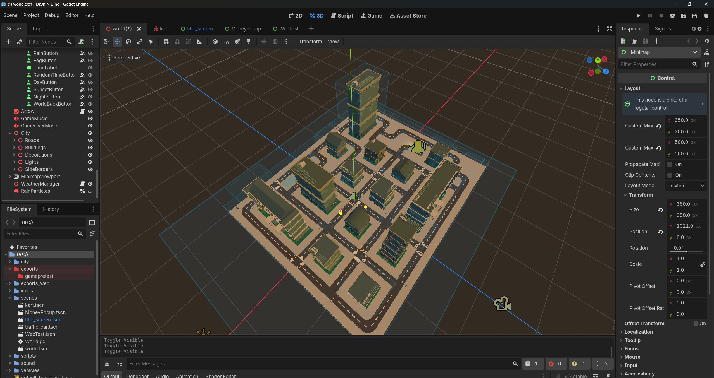
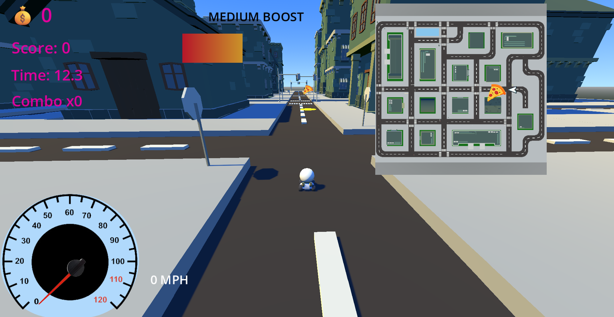
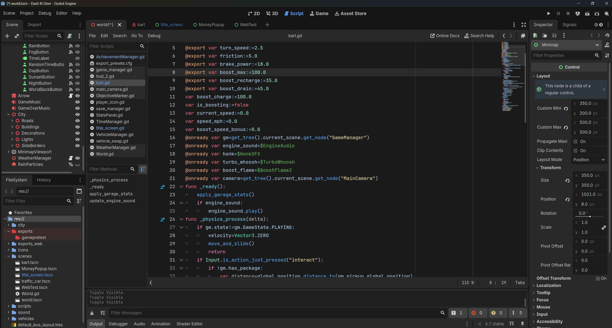

Workspace / Engineering
Technical Overview
Behind the build
Engineering.
Dine N Dash combines 3D environment design, waypoint-based navigation, vehicle selection, and gameplay systems. Each component must work together to create a cohesive driving and delivery experience.
Technical overview
Connecting the systems
The engineering behind Dine N Dash involves more than building a city. Its environment, navigation logic, vehicle selection, and exported builds each introduce different design and testing challenges.
01 / ENVIRONMENT
Building the city
The 3D environment is assembled from roads, sidewalks, buildings, and scene objects. Organizing these elements into a consistent layout supports navigation, expands the playable environment, and provides the foundation for driving gameplay.

City environment · 3D scene design
02 / NAVIGATION
Waypoints and route selection
The waypoint network represents connections between locations in the city. Effective routing requires more than selecting the nearest marker: connections must follow the road layout and guide the vehicle toward the correct destination.
Route testing examines waypoint connectivity, turn selection, path efficiency, and whether a chosen route reaches its intended destination.
03 / GAMEPLAY SYSTEMS
Garage to driving scene
Vehicle selection connects the garage interface to the driving experience. The selected vehicle must be identified, passed between scenes, and instantiated correctly when gameplay begins.
This involves coordinating scene transitions, selection data, and vehicle setup so that the garage choice determines which vehicle enters the driving scene.

Gameplay · vehicle and scene integration
04 / EXPORT & DEBUGGING
Editor versus browser
Running a project in the Godot editor does not guarantee that every exported build will behave the same way. Dine N Dash has encountered a memory-related error during browser testing, highlighting the differences between the desktop environment and web deployment.
Debugging involves reproducing the issue, reviewing project settings and error logs, isolating potential causes, and testing changes to identify a reliable solution.

GDScript · debugging and export testing
Engineering approach
Test the system, not just the scene
My approach to debugging is to define the expected behavior, reproduce the issue, inspect the relevant scripts and scene configuration, make a targeted change, and test the result. This process is especially important when multiple gameplay systems depend on one another.
Godot Engine
GDScript
3D Scene Design
Waypoint Routing
Debugging
Web Export Testing
The browser build is not currently available as a reliable playable version. Web export testing remains part of the project's technical work.